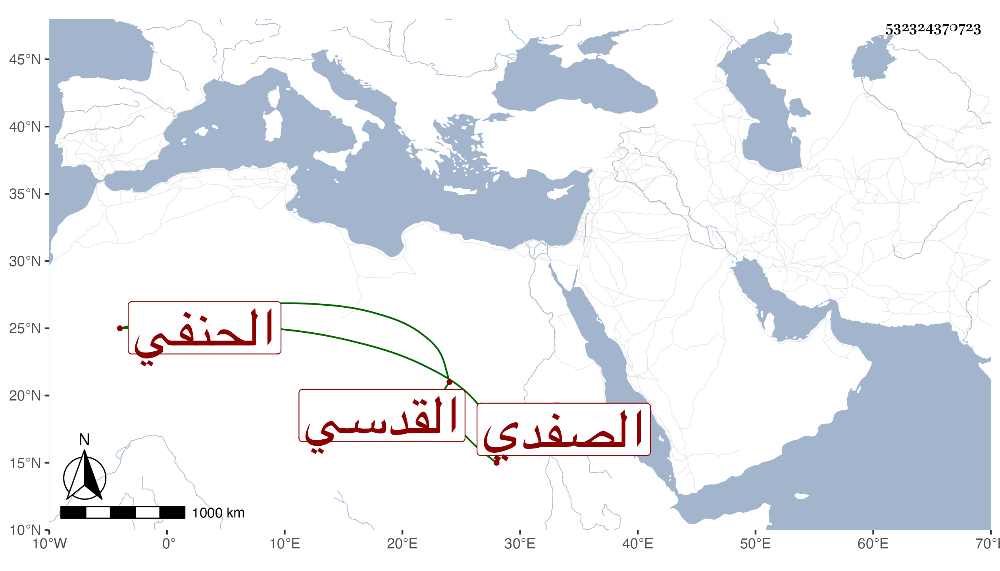

0902Sakhawi.DawLamic.ITO20230111-ara1.EIS1600.532324370723
Biography ID: 532324370723
1223
يوسف بن علي بن محمد بن ضوء الجمال الصفدي الأصل القدسي الحنفي أخو أحمد الماضي ويعرف بابن النقيب . ذكره شيخنا في معجمه بدون محمد وقال سمع على أبي محمود المقدسي جزءا خرجه لنفسه أوله المسلسل أجاز في الاستدعاء الذي فيه رابعة . قلت وسمع منه الموفق الأبي مع الحافظ ابن موسى سنة خمس عشرة .
